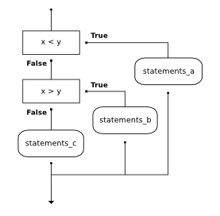

2.4. Statements: When Expressions Are Not Enough¶
Although well-constructed expressions are easy to understand, some python statements will improve the readability of our code in complex situations. A statement is a line or block of code that does not return a value. The simplest example of a statement in Python is the assignment statement, which stores a value in a variable with nothing returned.
In [1]: a = 5
Other useful statements are the function definition, if-elif-else block and try-expect blocks, all discussed below.
2.4.1. Function¶
We have already seen how the lambda expression store simple expressions, but
their body is restricted also be an
expression. This disallows, for example, assigning a value to a variable in the
body of the function. For complicated situations, we will define functions
using the function definition statement.
The syntax for a function definition is:
def name( parameters ):
""" docstring """
statements
You can make up any names you want for the functions you create, except that you can’t use a name that is a Python keyword, and the names must follow the rules for legal identifiers that were given previously. The parameters specify what information, if any, you have to provide in order to use the new function. Another way to say this is that the parameters specify what the function needs to do its work.
There can be any number of statements inside the function, but they have to be
indented from the def. In the examples in this book, we will use the
standard indentation of four spaces. Function definitions are the second of
several compound statements we will see, all of which have the same pattern:
- A header line which begins with a keyword and ends with a colon.
- A docstring that documents the function.
- A body consisting of one or more Python statements, each indented the same amount – 4 spaces is the Python standard – from the header line.
docstrings
If the first thing after the function header is a string (some tools insist that it must be a triple-quoted string), it is called a docstring and gets special treatment in Python and in some programming tools.
Another way to retrieve this information is to use the interactive
interpreter, and enter the expression <function_name>.__doc__, which
will retrieve the docstring for the function. So the string you write as
documentation at the start of a function is retrievable by python tools at
runtime. This is different from comments in your code, which are
completely eliminated when the program is parsed.
By convention, Python programmers use docstrings for the key documentation of their functions.
In a function definition, the keyword in the header is def, which is
followed by the name of the function and some parameters enclosed in
parentheses. The parameter list may be empty, or it may contain any number of
parameters separated from one another by commas. In either case, the parentheses
are required. Recall that the parameter list is more specifically known as the
formal parameters. This list of names describes those things that the
function will need to receive from the user of the function. When you use a
function, you provide values to the formal parameters.
The following code gives an example of defining a function named square that
computes the square of x. This value is saved to a local variable y and
returned using the return statement.
In [2]: def square(x):
...: y = x * x
...: return y
...:
In [3]: number = 10
In [4]: result = square(number)
In [5]: result
Out[5]: 100
More details about creating functions in Python will be provided in the upcoming chapter named Functional Programming.
2.4.2. Chained conditionals¶
The conditional expression allows us to write simple branching logic in the midst of our expressions, but chaining conditional expressions to form more complicated logic can become hard to read. Python provides a statement-block structure that will allow us to express more complicated Boolean logic in a clearer way. This is sometimes referred to as a chained conditional
In [6]: def whichIsBigger(x, y):
...: """ returns a string describing which value is larger"""
...: if x < y:
...: return "x is less than y"
...: elif x > y:
...: return "x is greater than y"
...: else:
...: return "x and y must be equal"
...: whichIsBigger(2,3)
...:
Out[6]: 'x is less than y'
The flow of control can be drawn in a different orientation but the resulting pattern is identical to the one shown above.
elif is an abbreviation of else if. Again, exactly one branch will be
executed. There is no limit of the number of elif statements but only a
single (and optional) final else statement is allowed and it must be the
last branch in the statement.
Each condition is checked in order. If the first is false, the next is checked, and so on. If one of them is true, the corresponding branch executes, and the statement ends. Even if more than one condition is true, only the first true branch executes.
Note
This workspace is provided for your convenience. You can use this activecode window to try out anything you like.
Check your understanding
- (A) a
- While the value in x is less than the value in y (3 is less than 5) it is not less than the value in z (3 is not less than 2).
- (B) b
- The value in y is not less than the value in x (5 is not less than 3).
- (C) c
- Since the first two Boolean expressions are false the else will be executed.
data-2-23: What will the following code print if x = 3, y = 5, and z = 2?
if x < y and x < z:
print("a")
elif y < x and y < z:
print("b")
else:
print("c")
2.4.3. Exception Handling Flow-of-control¶
Sometimes it is useful to catch certain situations where we can determine that
are function will crash. Examples include dividing by zero or trying to open a
non-existent file. Python provides a statement for catch these types of
mistakes: the try-except statement-block.
2.4.4. What is an exception?¶
An exception is a signal that a condition has occurred that can’t be easily handled using the normal flow-of-control of a Python program. Exceptions are often defined as being “errors” but this is not always the case. All errors in Python are dealt with using exceptions, but not all exceptions are errors.
Just like everything else in Python, exceptions are values that represent an object of a certain type of class, in this case an exception class. When our code comes upon an error, an exception value is returned.
The try-expect statement can run our code and catch any exception,
allowing us to perform some alternate action. Here is an example of the
try-expect block for catching division by zero.
In [7]: def safeDivision(x,y):
...: """ computes x/y and returns None on any exception"""
...: try:
...: output = x/y
...: return output
...: except:
...: output = None
...: return output
...: print(safeDivision(2,1))
...: print(safeDivision(2,0))
...:
2.0
None
This function guarantees that the function call will be error free. There are many other patterns related to exceptions that will be covered in the appendix.
2.4.5. The for loop¶
Reader familiar with another programming language will probably notice how few loops are used in this book. When working with data, we are able to use other construct called a comprehension to describe most situations that would use a loop in another language. There will be times when more conventional loops are convenient, so we will give a brief description of the Python syntax for loops here.
When we drew the square, it was quite tedious. We had to move then turn, move then turn, etc. etc. four times. If we were drawing a hexagon, or an octagon, or a polygon with 42 sides, it would have been a nightmare to duplicate all that code.
A basic building block of all programs is to be able to repeat some code over and over again. In computer science, we refer to this repetitive idea as iteration. In this section, we will explore some mechanisms for basic iteration.
The for statement allows us to write programs that implement iteration. As a simple example, let’s say we have some friends, and we’d like to send them each an email inviting them to our party. We don’t quite know how to send email yet, so for the moment we’ll just print a message for each friend.
Take a look at the output produced when you press the run button. There is
one line printed for each friend. Here’s how it works:
- name in this
forstatement is called the loop variable. - The list of names in the square brackets is called a Python list. Lists are very useful. We will have much more to say about them later.
- Line 2 is the loop body. The loop body is always indented. The indentation determines exactly what statements are “in the loop”. The body is performed one time for each name in the list.
- On each iteration or pass of the loop, first a check is done to see if there are still more items to be processed. If there are none left (this is called the terminating condition of the loop), the loop has finished. Program execution continues at the next statement after the loop body.
- If there are items still to be processed, the loop variable is updated to refer to the next item in the list. This means, in this case, that the loop body is executed here 7 times, and each time name will refer to a different friend.
- At the end of each execution of the body of the loop, Python returns
to the
forstatement, to see if there are more items to be handled.
As a program executes, the interpreter always keeps track of which statement is
about to be executed. We call this the control flow, or the flow of
execution of the program. Flow of control is often easy to visualize and
understand if we draw a flowchart. This flowchart shows the exact steps and
logic of how the for statement executes.

A codelens demonstration is a good way to help you visualize exactly how the
flow of control works with the for loop. Try stepping forward and backward
through the program by pressing the buttons. You can see the value of number
change as the loop iterates through the list of friends.
(vtest)
2.4.6. Aside: The accumulator pattern¶
The above program should represent a pattern that is familiar to anyone that has learned to program in an imperative or object oriented language. Here is another program that follows the same pattern.
In [8]: def square(x):
...: runningtotal = 0
...: for counter in range(x):
...: runningtotal = runningtotal + x
...: return runningtotal
...:
In [9]: toSquare = 10
In [10]: squareResult = square(toSquare)
In [11]: squareResult
Out[11]: 100
In the program above, notice that the variable runningtotal starts out with
a value of 0. Next, the iteration is performed x times. Inside the for
loop, the update occurs. runningtotal is reassigned a new value which is the
old value plus the value of x.
This pattern of iterating the updating of a variable is commonly referred to as the accumulator pattern. We refer to the variable as the accumulator. This pattern will come up over and over again. Remember that the key to making it work successfully is to be sure to initialize the variable before you start the iteration. Once inside the iteration, it is required that you update the accumulator.
Note
What would happen if we put the assignment runningTotal = 0 inside
the for statement? Not sure? Try it and find out.
Here is the same program in codelens. Step through the function and watch the “running total” accumulate the result.
(sq_accum3)
Note
The accumulator pattern is another pattern that won’t appear very often in
this text. In fact, later we will illustrate how pure functional programs
use recursion as an alternate to loops in the chapter titled Recursion
and how this pattern can be abstracted in the form of the reduce
function in Higher Order Functions. Being able to abstract an
accumulator pattern to a reduction will be an important skill when using
Hadoop and Spark.
2.4.7. The while loop¶
There is another Python statement that can also be used to build an iteration.
It is called the while statement. The while statement provides a much
more general mechanism for iterating. Similar to the if statement, it uses
a boolean expression to control the flow of execution. The body of while will
be repeated as long as the controlling boolean expression evaluates to True.
The following figure shows the flow of control.

We can use the while loop to create any type of iteration we wish, including
anything that we have previously done with a for loop. For example, the
program in the previous section could be rewritten using while. Instead of
relying on the range function to produce the numbers for our summation, we
will need to produce them ourselves. To do this, we will create a variable
called aNumber and initialize it to 1, the first number in the summation.
Every iteration will add aNumber to the running total until all the values
have been used. In order to control the iteration, we must create a boolean
expression that evaluates to True as long as we want to keep adding values
to our running total. In this case, as long as aNumber is less than or
equal to the bound, we should keep going.
Here is a new version of the summation program that uses a while statement.
(ch07_while1)
You can almost read the while statement as if it were in natural language.
It means, while aNumber is less than or equal to aBound, continue
executing the body of the loop. Within the body, each time, update theSum
using the accumulator pattern and increment aNumber. After the body of the
loop, we go back up to the condition of the while and reevaluate it. When
aNumber becomes greater than aBound, the condition fails and flow of
control continues to the return statement.
The same program in codelens will allow you to observe the flow of execution.
(ch07_while2)
Note
The names of the variables have been chosen to help readability.
More formally, here is the flow of execution for a while statement:
- Evaluate the condition, yielding
FalseorTrue. - If the condition is
False, exit thewhilestatement and continue execution at the next statement. - If the condition is
True, execute each of the statements in the body and then go back to step 1.
The body consists of all the statements below the header with the same indentation.
This type of flow is called a loop because the third step loops back around
to the top. Notice that if the condition is False the first time through the
loop, the statements inside the loop are never executed.
The body of the loop should change the value of one or more variables so that
eventually the condition becomes False and the loop terminates. Otherwise,
the loop will repeat forever. This is called an infinite loop. An endless
source of amusement for computer scientists is the observation that the
directions written on the back of the shampoo bottle (lather, rinse, repeat)
create an infinite loop.
In the case shown above, we can prove that the loop terminates because we
know that the value of aBound is finite, and we can see that the value of aNumber
increments each time through the loop, so eventually it will have to exceed aBound. In
other cases, it is not so easy to tell.
Note
Introduction of the while statement causes us to think about the types of
iteration we have seen. The for statement will always iterate through a
sequence of values like the list of names for the party or the list of
numbers created by range. Since we know that it will iterate once for
each value in the collection, it is often said that a for loop creates a
definite iteration because we definitely know how many times we are
going to iterate. On the other hand, the while statement is dependent
on a condition that needs to evaluate to False in order for the loop to
terminate. Since we do not necessarily know when this will happen, it
creates what we call indefinite iteration. Indefinite iteration simply
means that we don’t know how many times we will repeat but eventually the
condition controlling the iteration will fail and the iteration will stop.
(Unless we have an infinite loop which is of course a problem)
What you will notice here is that the while loop is more work for
you — the programmer — than the equivalent for loop. Using a while
loop you have to control the loop variable yourself. You give it an initial value, test
for completion, and then make sure you change something in the body so that the loop
terminates.
So why have two kinds of loop if for looks easier? This next example shows
an indefinite iteration where we need the extra power that we get from the
while loop.
Note
This workspace is provided for your convenience. You can use this activecode window to try out anything you like.
Check your understanding
-
data-2-24: True or False: You can rewrite any for-loop as a while-loop.
- (A) True
- Although the while loop uses a different syntax, it is just as powerful as a for-loop and often more flexible.
- (B) False
- Often a for-loop is more natural and convenient for a task, but that same task can always be expressed using a while loop.
- (A) n starts at 10 and is incremented by 1 each time through the loop, so it will always be positive
- The loop will run as long as n is positive. In this case, we can see that n will never become non-positive.
- (B) answer starts at 1 and is incremented by n each time, so it will always be positive
- While it is true that answer will always be positive, answer is not considered in the loop condition.
- (C) You cannot compare n to 0 in while loop. You must compare it to another variable.
- It is perfectly valid to compare n to 0. Though indirectly, this is what causes the infinite loop.
- (D) In the while loop body, we must set n to False, and this code does not do that.
- The loop condition must become False for the loop to terminate, but n by itself is not the condition in this case.
data-2-25: The following code contains an infinite loop. Which is the best explanation for why the loop does not terminate?
n = 10
answer = 1
while n > 0:
answer = answer + n
n = n + 1
print(answer)